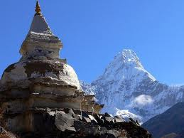
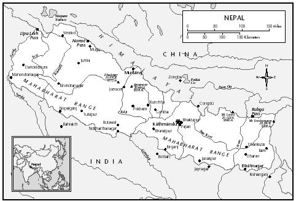
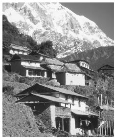

|
|
Official Web-site of Nepal
|
|
|
Identification
Nepal is named for the Kathmandu Valley,
where the nation's founder established a capital in the late eighteenth century.
Nepali culture represents a fusion of Indo-Aryan and Tibet-Mongolian influences,
the result of a long history of migration, conquest, and trade.
|

|
Location and Geography
Nepal is a roughly rectangular country with an area of 147,181 square miles (381,200 square kilometers).
To the south, west, and east it is bordered by Indian states; to the north lies Tibet. Nepal is home to the Himalayan Mountains, including Mount Everest.
From the summit of Everest, the topography plunges to just above sea level at the Gangetic Plain on the southern border. This drop divides the country into three horizontal zones: the high mountains, the lush central hills, and the flat, arid Terai region in the south. Fast-moving, snow-fed rivers cut through the hills and mountains from north to south, carving deep valleys and steep ridges. The rugged topography has created numerous ecological niches to which different ethnic groups have adapted. Although trade has brought distinct ethnic groups into contact, the geography has created diversity in language and subsistence practices.
The result is a country with over thirty-six ethnic groups and over fifty languages. |
Demography
The population in 1997 was just over 22.6 million. Although infant mortality rates are extremely high, fertility rates are higher. High birth rates in rural areas have led to land shortages, forcing immigration to the Terai, where farmland is more plentiful, and to urban areas, where jobs are available. Migration into cities has led to over-crowding and pollution.
The Kathmandu Valley has a population of approximately 700,000. |
Linguistic Affiliation
After conquering much of the territory that constitutes modern Nepal,
King Prithvi Narayan Shah (1743–1775) established Gorkhali (Nepali) as the national language.
Nepali is an Indo-European language derived from Sanskrit with which it shares and most residents speak at least some Nepali, which is the medium of government, education, and most radio and television broadcasts. For many people Nepali is secondary to the language of their ethnic group or region. This situation puts certain groups at a disadvantage in terms of education and civil service positions. Since the institution of a multiparty democracy in 1990,
linguistic issues have emerged as hotly debated topics. |
Symbolism
The culture has many symbols from Hindu and Buddhist sources.
Auspicious signs, including the ancient Hindu swastika and Shiva's trident,
decorate buses, trucks, and walls. Other significant symbols are the emblems
(tree, plow, sun) used to designate political parties.
Prominent among symbols for the nation as
a whole are the national flower and bird, the rhododendron
and danfe; the flag; the plumed crown worn by the kings; and the
crossed kukhris (curved knives) of the Gurkhas, mercenary regiments
that have fought for the British Army in a number of wars. Images of the
current monarch and the royal family are displayed in many homes and places of business.
In nationalistic rhetoric the metaphor of a garden with many different kinds of flowers
is used
to symbolize national unity amid cultural diversity. |
GO TO THE TOP |
History and Ethnic Relations

E Mongolian tribes from the east called Kiratis brought Buddhism in the seventh
Nepal
or eighth century B.C.E. Hinduism flourished in the third and fourth centuries C.E.
under the Licchavis, an Indo-Aryan people from northern India, and after the migration of
Hindus from India during the Mughal period. The Hindu Malla dynasties reigned in the
Kathmandu Valley between the thirteenth and fifteenth centuries, encouraging tolerance
toward Buddhism and an orthodox, caste-oriented form of Hinduism. Since unification in the late eighteenth century and through the hundred-year period of Rana rule, the culture of hill Hindus, Parbatiya, has been dominant.
The birth of the nation is dated to Prithvi Narayan Shah's conquest of the Kathmandu Valley
kingdoms in 1768. The expansionist reigns of Shah and his successors carved out a territory
twice the size of modern Nepal. However, territorial clashes with the Chinese in the late
eighteenth century and the British in the early nineteenth century pushed the borders back
to their current configuration. |
National Identity
To unify a geographically and culturally divided land, Shah perpetuated the culture and language of high-caste Hindus and instituted a social hierarchy in which non-Hindus as well as Hindus were ranked according to caste-based principles. Caste laws were further articulated in the National Code of 1854.
By privileging the language and culture of high-caste Hindus, the state has marginalized non-Hindu and low-caste groups. Resentment in recent years has led to the organization of ethnopolitical parties, agitation for minority rights, and talk about the formation of a separate state for Mongolian ethnic groups.
Despite ethnic unrest, Nepalis have a strong sense of national identity and pride. Sacred Hindu and Buddhist sites and the spectacular mountains draw tourists and pilgrims and give citizens a sense of importance in the world. Other natural resources, such as rivers and flora and fauna are a source of national pride.
|
Ethnic Relations

The population consists of numerous racial, cultural, and linguistic groups that often are divided into three broad categories: Indo-Nepalese, Tibeto-Nepalese, and indigenous Nepalese. The Indo-Nepalese migrated from India over several
Parts.
The village of Siklis, in the Himalayas. Village houses are usually clustered in river valleys or along ridge tops.
centuries; they practice Hinduism, have Caucasian features, and speak Indo-Aryan languages. They have settled primarily in the lower hills and river valleys and the Terai. The Tibeto-Nepalese have distinctively Mongolian features and speak Tibeto-Burmese languages; these groups occupy the higher hills and mountainous areas. Different groups within this category practice Buddhism, animism, or Hinduism. There are scattered tribes of indigenous Nepalis, whose origins probably predate the arrival of Indo- and Tibeto-Nepalese peoples.
Hindu castes and Buddhist and animist ethnic groups were historically collapsed into a single caste hierarchy. At the top are high-caste Hindus. Below them are alcohol-drinking ( matwali ) castes, which include Mongolian ethnic groups. At the bottom are untouchable Hindu castes that have traditionally performed occupations considered defiling by higher castes. The Newars of the Kathmandu Valley have a caste system that has been absorbed into the national caste hierarchy.
Historically, members of the highest castes have owned the majority of land and enjoyed the greatest political and economic privileges. Members of lower castes have been excluded from political representation and economic opportunities. The untouchable castes were not permitted to own land, and their civil liberties were circumscribed by law. Caste discrimination is officially illegal but has not disappeared. In 1991, 80 percent of positions in the civil service, army, and police were occupied by members of the two highest castes.
|
GO TO THE TOP |
The Caste System
One integral aspect of Nepalese society is the existence of the Hindu caste system, modeled after the ancient and orthodox Brahmanic system of the Indian plains. The caste system did not exist prior to the arrival of Indo-Aryans. Its establishment became the basis of the emergence of the feudalistic economic structure of Nepal: the high-caste Hindus began to appropriate lands-- particularly lowlands that were more easily accessible, more cultivatable, and more productive--including those belonging to the existing tribal people, and introduced the system of individual ownership. Even though the cultural and religious rigidity of the caste system slowly has been eroding, its introduction into Nepal was one of the most significant influences stemming from the migration of the Indo-Aryan people into the hills. The migrants from the north later were incorporated into the Hindu caste system, as defined by Indo-Aryan migrants, who quickly controlled the positions of power and authority. Tibetan migrants did not practice private ownership; their system was based on communal ownership.
No single, widely acceptable definition can be advanced for the caste system. Bishop and others, however, view caste as a multifaceted status hierarchy composed of all members of society, with each individual ranked within the broad, fourfold Hindu class (varna, or color) divisions, or within the fifth class of untouchables--outcastes and the socially polluted. The fourfold caste divisions are Brahman (priests and scholars), Kshatriya or Chhetri (rulers and warriors), Vaisya (or Vaisaya, merchants and traders), and Sudra (farmers, artisans, and laborers). These Pahari caste divisions based on the Hindu system are not strictly upheld by the Newars. They have their own caste hierarchy, which, they claim, is parallel in caste divisions to the Pahari Hindu system. In each system, each caste (jati) is ideally an endogamous group in which membership is both hereditary and permanent. The only way to change caste status is to undergo Sanskritization. Sanskritization can be achieved by migrating to a new area and by changing one's caste status and/or marrying across the caste line, which can lead to the upgrading or downgrading of caste, depending on the spouse's caste. However, given the rigidity of the caste system, intercaste marriage carries a social stigma, especially when it takes place between two castes at the extreme ends of the social spectrum.
As Bishop further asserts, at the core of the caste structure is a rank order of values bound up in concepts of ritual status, purity, and pollution. Furthermore, caste determines an individual's behavior, obligations, and expectations. All the social, economic, religious, legal, and political activities of a caste society are prescribed by sanctions that determine and limit access to land, position of political power, and command of human labor. Within such a constrictive system, wealth, political power, high rank, and privilege converge; hereditary occupational specialization is a common feature. Nevertheless, caste is functionally significant only when viewed in a regional or local context and at a particular time. The assumed correlation between the caste hierarchy and the socioeconomic class hierarchy does not always hold. Because of numerous institutional changes over the years and increased dilution (or expansion) of the caste hierarchy stemming from intercaste marriages, many poor high-caste and rich low-caste households could be found in the society in 1991.
Although Paharis, especially those in rural areas, were generally quite conscious of their caste status, the question of caste did not usually arise for Tibeto-Nepalese communities unless they were aware of the Hindu caste status arbitrarily assigned to them. Insofar as they accepted caste-based notions of social rank, the Tibeto-Nepalese tended not only to see themselves at a higher level than did the Hindu Pahari and Newar, but also differed as to ranking among themselves. Thus, it was doubtful that the reported Rai caste's assumption of rank superiority over the Magar and Gurung castes was accepted by the two latter groups. Moreover, the status of a particular group was apt to vary from place to place, depending on its relative demographic size, wealth, and local power.
|
Language
Even though Nepali (written in Devanagari script, the same as Sanskrit and Hindi) was the national language and was mentioned as the mother tongue by approximately 58 percent of the population, there were several other languages and dialects. Other languages included Maithili, Bhojpuri, Tharu, Tamang, Newari, and Abadhi. Non-Nepali languages and dialects rarely were spoken outside their ethnic enclaves. In order to estimate the numerical distribution of different ethnic groups, the census data indicating various mother tongues spoken in the country must be used.
In terms of linguistic roots, Nepali, Maithili, and Bhojpuri belonged to the Indo-European family; the mother tongues of the Tibeto-Nepalese groups, including Newari, belonged predominantly to the Tibeto-Burman family. The Pahari, whose mother tongue was Nepali, was the largest ethnic group. If the Maithili- and Bhojpuri-speaking populations of the Tarai were included, more than 75 percent of the population belonged to the Indo-Nepalese ethnic group. Only three other ethnic groups--the Tamang, the Tharu, and the Newar--approached or slightly exceeded the one-half million population mark. Most of those non-Nepali linguistic and ethnic population groups were closely knit by bonds of nationalism and cultural harmony, and they were concentrated in certain areas.
|
GO TO THE TOP |
|